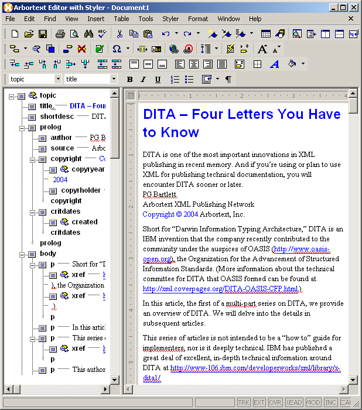
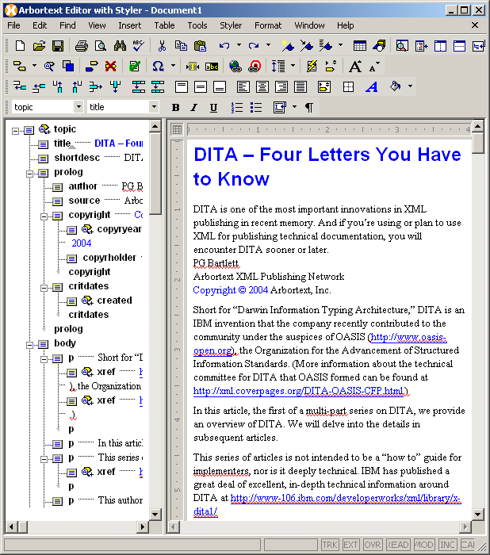

Authoring DITA Topics
When you first open a DITA topic, the default Arbortext Editor
configuration for editing DITA topics appears. You author DITA topics
in the same way that you author other types of XML documents. The
DITA Application provides an additional dialog called the Resource Manager that enables you to insert images, content
references, links, and cross references into your DITA topic. When
you invoke an operation such as , the Resource
Manager is displayed with the relevant tab active, docked
to the left side of the Arbortext Editor window.

